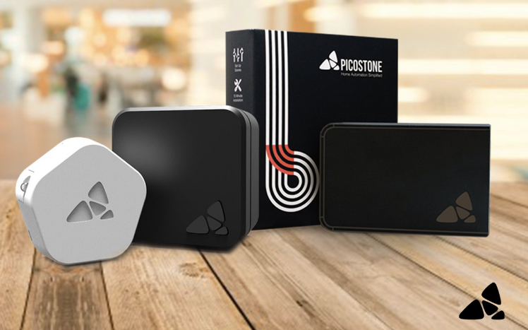

This is a case study offering potential solutions to some of Picostone app’s problems.
My role
App Critique
UX Research
Wireframes
Devices
iPhone 6s
Title
User Experience Intern
Introduction.
The objective of Picostone is to automate rooms and make them energy efficient. Picostone has 2 devices - BASIC and POLAR. Basic is a small WiFi-based device that fits right behind the switchboard and lets users operate lights and fans through their smartphones. Polar, on the other hand, works well with air conditioners.
Problem.
After launching the Picostone app, even though it was quite functional it failed to deliver a great experience to the users. The company received feedback from its users such as they were getting lost in the app and difficulty in connecting the picostone devices with the mobile app. To counter these problems I was recruited in the team.
Rolling out solutions.
Elderly people need 24/7 support. Hence, a single caretaker looking after the needs of all the elderly people at the old age home will not be helpful. Secondly, elderly people are open to new technology. Hence, we concluded to make use of a smart watch. After this decision was made by the team we cross verified our predictions with the same user group and 90% of them were ready to use smart wearables
Caretakers were facing problems since they could not immediately respond to emergencies. Also, they only understood what kind of any emergency it is after reaching the room of the elderly person or when the neighbours of the patient would hear them calling for help and then call the caretaker. Since, the caretakers were using smart devices we decided to use a tablet to keep track of the elderly people. A tablet was used since it was portable as well as due to the large screen size a larger number of elderly people could be tracked at a single glance.
Family members were not getting daily updates from the old age home. In case of an emergency, most of the times the family members were informed very late and hence they could not help much. As a result, we decided that the live data received from the watch will be sent to the respective family members of these elderly people using a mobile application. Hence, now the family members could get notifications and daily health updates.